Character panel角色面板
Every character, one list所有角色，一張清單
Name, Base/Job level, map, HP/SP and EXP for every character across every account, updated live from the game page.每個帳號、每隻角色的名稱、Base/Job 等級、地圖、HP/SP 與經驗值，直接從遊戲網頁即時更新。
- Characters that need a look float to the top: stopped while others idle, HP under 25%, or too heavy to attack.需要注意的角色會浮到最上面：別人在掛機它卻停了、HP 低於 25%、或負重過重無法攻擊。
- Hover a row for full details: weight, Zeny, unspent stat points, current target.游標移到角色上看詳細：負重、Zeny、未分配屬性點、目前目標。
- Filter by 需要注意 / 掛機中 / 離線, group rows, drag to reorder, add nicknames and a job goal.依「需要注意／掛機中／離線」篩選，可分群組、拖曳排序、加暱稱與職業方向。
- Start or stop idling per character with one click.每隻角色一鍵開始或停止掛機。
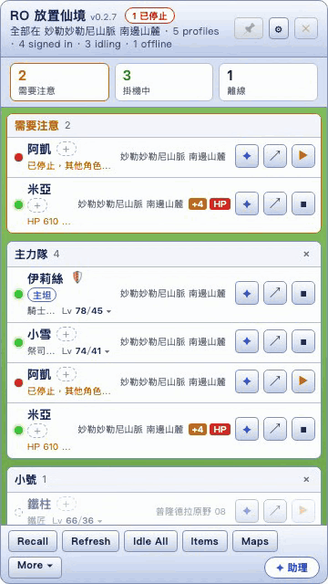
Bulk actions一鍵全隊
Move the whole party at once全隊一起行動
- Idle All / Stop All starts every stopped character, or stops everyone when all are idling.Idle All / Stop All：讓停下來的角色全部開始掛機；全都在掛機時則全部停止。
- Recall sends everyone back to their save point; it asks once before acting.Recall：全員回儲存點，執行前會先確認一次。
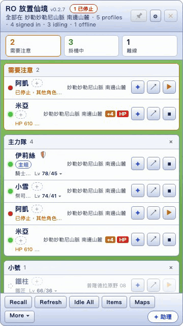
AI assistantAI 助理
Ask about one character or the whole party問單一角色，或問全隊
The assistant reads live state, battle logs, skills and the game's own monster, map and item data before it answers. Type @角色 to scope a question.回答前，助理會先讀角色即時狀態、戰鬥紀錄、技能，以及遊戲本身的怪物、地圖、道具資料。輸入 @角色 就只問那一隻。
- Stat and skill suggestions come with a button that writes them into the game's 自動配點, after a confirm.配點與技能建議附一顆按鈕，確認後直接寫入遊戲的「自動配點」。
- Each lookup it made is listed above the reply.回覆上方會列出它查了哪些資料。
- Keeps a small, editable Markdown memory of what it learned about your characters.會把學到的角色資訊記在可自行編輯的 Markdown 記憶裡。
- Short lessons appear when the log shows a real problem, such as repeated cast interruptions.戰鬥紀錄出現實際問題（例如詠唱一直被打斷）時，會跳出簡短教學。
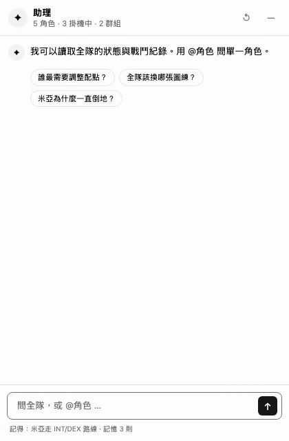
Bring any model任選模型
Your provider, your key自己的服務、自己的金鑰
Point it at any Anthropic- or OpenAI-compatible endpoint, by default a local CLIProxyAPI. Pick from the provider's live model list; the context size is detected for you.可接任何相容 Anthropic 或 OpenAI 的端點，預設是本機的 CLIProxyAPI。從服務提供的模型清單挑選，上下文長度自動偵測。
- API keys are encrypted on disk and never reach the game windows.API 金鑰加密存在本機，遊戲視窗永遠拿不到。
- Optional Tavily key adds web search (search and page extraction only).可選填 Tavily 金鑰啟用網路搜尋（只開放搜尋與擷取網頁）。
- Test connection also checks that prompt caching works.Test connection 也會檢查提示快取是否生效。
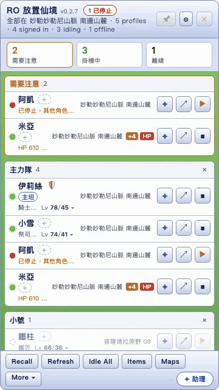
Map & monster atlas地圖與怪物分布
Find where to farm, then go there找到練功點，直接過去
All 226 maps and their spawns, offline. Search a monster to get the maps sorted by its spawn share, with aggressive, boss and MVP tags. Move all or Move selected sends characters there using the game's own map command.離線收錄全部 226 張地圖與怪物分布。搜尋怪物，地圖會依出現比例排序，並標出主動怪、BOSS、MVP。Move all 或 Move selected 用遊戲本身的移動指令把角色送過去。
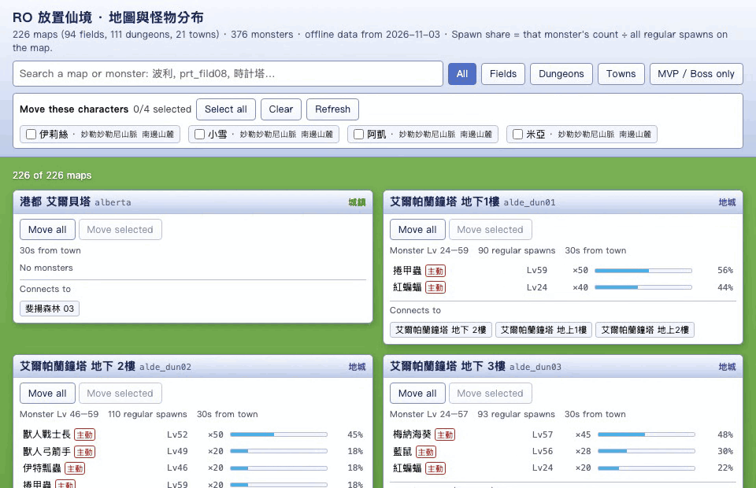
Item settings for everyone全角色道具設定
Edit once, apply to every character改一次，套用到每隻角色
Merges every character's loot, storage, sell, potion and restock rules into one table. Give a character its own row where it differs, then apply to all. Hover an item for its description, weight and sell price.把每隻角色的撿取、存倉、販賣、喝水、補貨規則合併成一張表。個別角色不同的地方可以單獨設定，再一次套用到全部。游標移到道具上可看說明、重量與收購價。
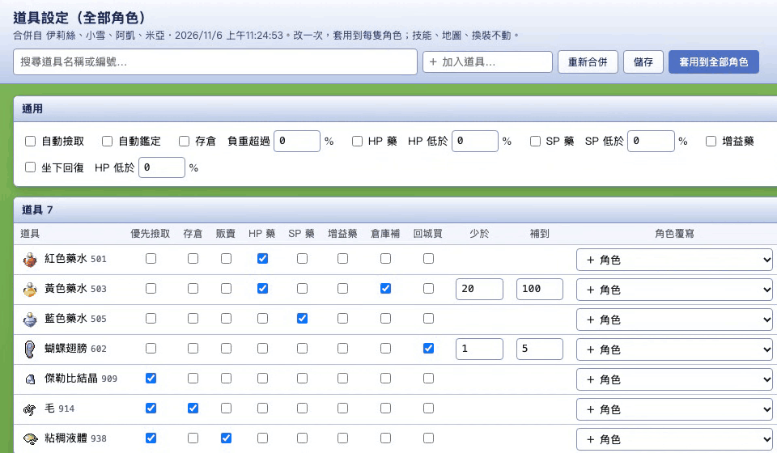
Class chart & guides職業圖與攻略
Plan the job path規劃轉職路線
Novice to 4th class on one zoomable chart, plus player guides from ned-lin-9527.github.io/Ragnarok. Set a final job per character and the assistant plans stats and skills toward it.從初學者到四轉，一張可縮放的職業圖，另附 ned-lin-9527.github.io/Ragnarok 的玩家攻略。為每隻角色設定最終職業，助理會依此規劃配點與技能。
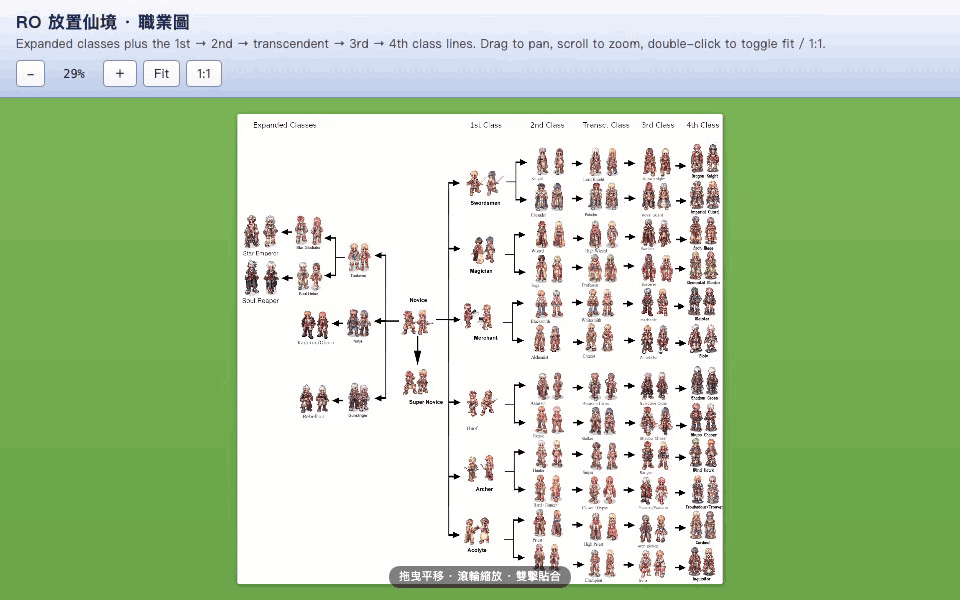
Assist & lure modes輔助模式與拉怪模式
Right-click a character在角色上按右鍵
- Assist (🛡): every monster on the current map is set to fight back only when hit. Good for support characters.輔助模式（🛡）：本圖所有怪物設為「被打才還手」，適合輔助職業。
- Lure (🧲): every monster on the current map is set to be pulled, for a tank that gathers mobs.拉怪模式（🧲）：本圖所有怪物設為「引怪」，給負責拉怪的坦。
- Both re-apply by themselves after every map change. Pick the same item again to turn it off.換圖後會自動重新套用；再點一次同一個選項即可關閉。
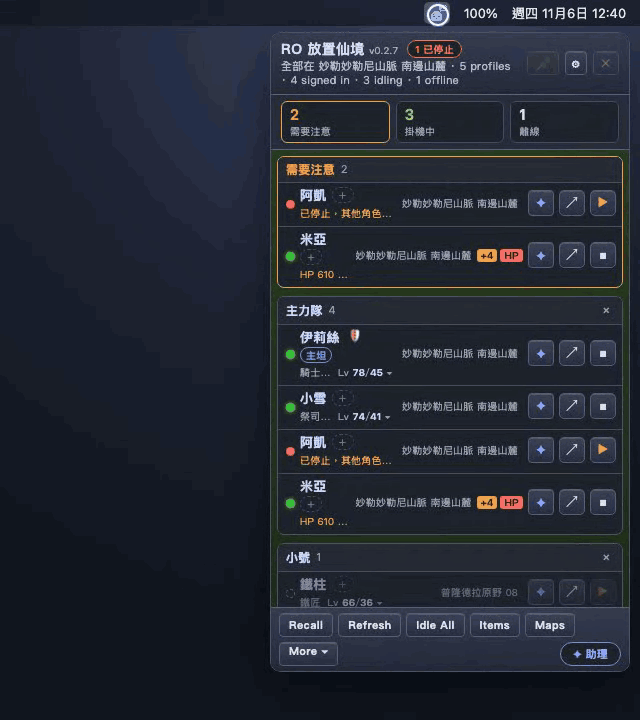
Guides to follow跟隨攻略
Pin guides to a character替角色釘選攻略
Click 📖 under the chat to pick up to three guides from ned-lin-9527.github.io/Ragnarok and add your own note. The assistant reads them on every question about that character.點對話框下方的 📖，從 ned-lin-9527.github.io/Ragnarok 挑最多三篇攻略，再加上自己的指示。之後問這隻角色的每個問題，助理都會一併參考。
- Guides for the character's job are suggested first; search the rest.先推薦該職業的攻略，其他可搜尋。
- Click ↗ on any guide to open it in its own window.按任一攻略旁的 ↗，在獨立視窗開啟。
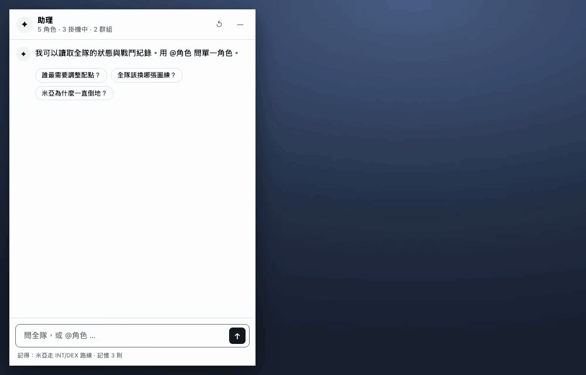
Hands-off upkeep自動維護
It keeps itself running自己會顧好自己
- Offline wake. Offline characters keep their last data, greyed out, and wake once an hour to refresh it.離線喚醒：離線角色保留最後的資料（灰色顯示），每小時自動上線一次更新。
- Refresh wakes every offline character now, one by one; each goes offline again a minute later.Refresh：立刻逐一喚醒所有離線角色，一分鐘後各自再離線。
- Auto-update. A new release shows an Update to v… button; nothing installs until you click it.自動更新：有新版本時會出現 Update to v… 按鈕，按下去才安裝。
- More menu: guide, class chart, export folder, add profile, start at login.More 選單：攻略、職業圖、匯出資料夾、新增設定檔、登入時啟動。
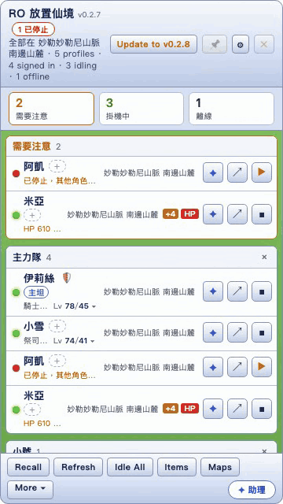
Local read-only API本機唯讀 API
Script your own tools自己寫工具
Latest character snapshots, battle logs and per-hour summaries on 127.0.0.1:47615, behind a bearer token. Read-only: it never changes the game.在 127.0.0.1:47615 提供最新角色資料、戰鬥紀錄與每小時統計，需要 bearer token。唯讀，不會動到遊戲。
/characters,/characters/:name,/characters/:name/log,/characters/:name/summary/characters、/characters/:name、/characters/:name/log、/characters/:name/summary
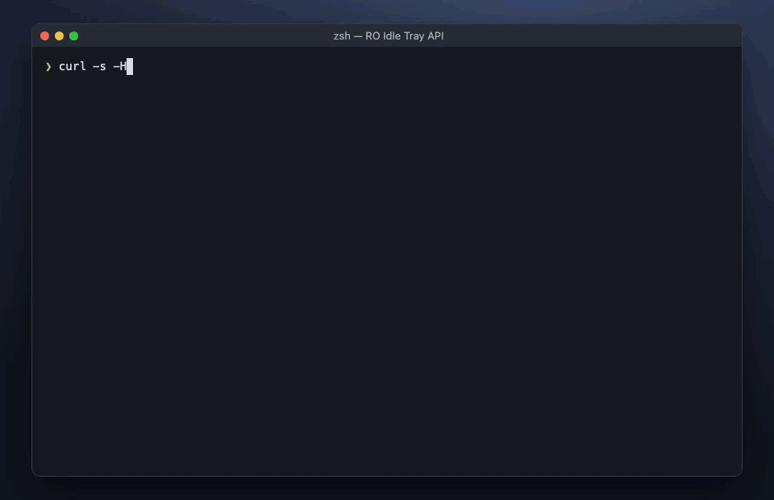
Also in the box其他功能
- Isolated accounts. Each profile has its own browser storage, so Google sign-ins never mix.帳號隔離：每個設定檔有獨立的瀏覽器資料，Google 登入不會混在一起。
- Online / Offline per character from the same right-click menu.每隻角色 Online／Offline，同樣在右鍵選單切換。
- Pin keeps the panel above other windows and Spaces.釘選讓面板浮在其他視窗與桌面空間上方。
Install安裝
- Download the
.dmgfrom the latest release and drag the app to Applications.從最新版本下載.dmg，把 App 拖進「應用程式」。 - The build is not Apple-notarized, so the first time: right-click the app › Open › Open.程式未經 Apple 公證，第一次請在 App 上按右鍵 › 打開 › 打開。
- Click the tray icon, sign in with Google once per profile, and your characters appear in the panel.點選單列圖示，每個設定檔用 Google 登入一次，角色就會出現在面板上。